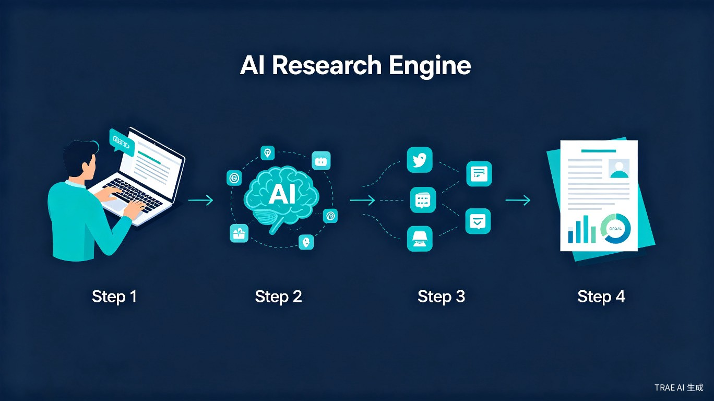
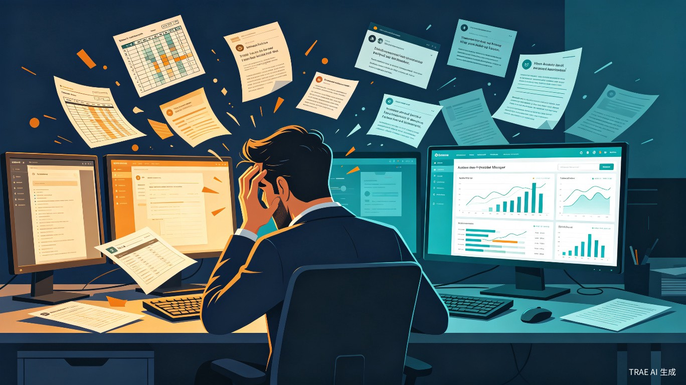
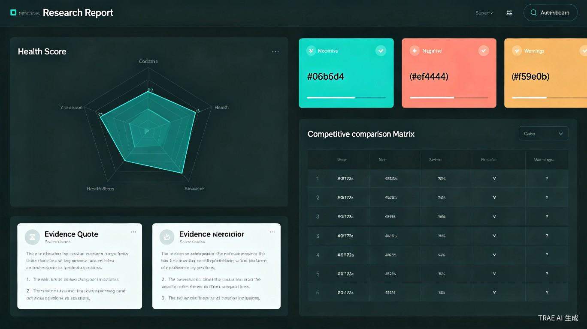

1 创意名称与介绍
产品名称：驾言
"驾"代表汽车与驾驶领域，"言"代表用户的声音与反馈。驾言，意为倾听驾驶者的声音，将碎片化的市场反馈转化为有证据支撑的产品决策依据。
想解决什么问题：汽车座舱产品经理在做产品决策时，面临用户反馈分散在 8+ 个平台、分析依赖主观判断、结论缺乏量化证据、竞品对比缺乏系统方法、调研报告手工整理耗时数天的五大困境。驾言旨在用 AI 自动化这一整个流程。
为什么会想到做这个：在汽车行业，智能座舱已成为核心竞争维度。然而，座舱产品经理的决策依然高度依赖"刷帖子"式的人工调研——从微博、懂车帝、汽车之家、车质网等平台手动搜集用户反馈，凭经验判断痛点优先级。这种模式效率低、偏差大、不可追溯。随着大语言模型能力的成熟，我们认为完全可以用 AI 来自动化这个"采集-分析-报告"的完整链路。
产品形态：一个基于 Web 的 AI 调研系统。用户输入自然语言问题（如"20-30 万纯电轿车语音助手体验怎么样？"），系统自动规划调研方案、采集分析数据、生成结构化深度调研报告。

2 目标用户及痛点
面向哪些用户
核心用户是中国传统车企的智能座舱/车机系统产品经理。他们负责智能座舱的产品设计与规划，需要持续关注用户对座舱体验的反馈，以指导功能迭代和产品决策。
使用场景
新功能立项前
需要了解市场上用户对某类功能的真实反馈和竞品表现，评估是否值得投入
收到模糊市场反馈
经销商或高管转来"用户都在吐槽语音助手"，需要量化验证问题的真实范围和严重程度
季度需求评审
需要系统性的痛点优先级排序，用数据支撑需求排期决策
发现新市场机会
探索性调研某个细分领域，寻找差异化产品机会
当前痛点

| 困境 | 现状 | 驾言的解决方案 |
|---|---|---|
| 信息碎片化 | 反馈散在 8+ 个平台，无法统一检索 | 一个入口，自动采集多源数据 |
| 分析主观化 | 靠刷帖子形成印象，缺乏量化指标 | LLM 结构化分析 + 17 维健康打分 |
| 证据缺失 | 知道有问题但说不出"多少人、多严重" | 每条结论锚定原始评论证据 |
| 竞品盲区 | 竞品动态靠媒体报道，缺乏系统对比 | 同维度横向对比 + 薄弱环节观察 |
| 报告耗时 | 手工整理数据、写分析、做图表 | 一键生成带图表引用证据的报告 |
3 核心功能与技术亮点
核心工作流
输入问题
自然语言开放式提问
AI 规划方案
自动识别车型、维度、数据源
异步执行
多源采集 + 多维分析
输出报告
结构化深度调研报告
17 维结构化分析体系
驾言构建了覆盖汽车体验全链路的 17 维分析框架，远超通用舆情工具的分析深度：
智能座舱层 辅助驾驶层 整车基础层
证据锚定机制
每条分析结论都附带原始用户反馈引用，标注来源平台和原文。例如："1,247 条反馈中，32% 提及语音唤醒问题，附 5 条典型证据"。这确保了分析结论可追溯、可验证，有效对抗 LLM 幻觉风险。
维度健康分
每个分析维度产出一个 0-100 的健康分，由情感分布、提及频率、负面严重度、趋势变化四个子分加权合成，并标注置信度区间，避免"伪量化"误导决策。
竞品薄弱环节观察
通过同维度横向对比，系统不仅展示各车型的优劣势矩阵，还会标注竞品被集中吐槽但证据不足的环节，作为待验证假设供产品经理进一步探索。

4 技术架构
前端框架
Next.js 15 + React 19 + TypeScript + Tailwind CSS 4
AI 引擎
大语言模型（OpenAI 兼容 SDK），预留多模型切换接口
数据可视化
Recharts + ECharts（雷达图、热力图、趋势图）
数据源
微博 API、B站 API、懂车帝、汽车之家、小红书、车质网（分阶段接入）
存储层
可插拔架构：本地 JSON → Supabase，工厂模式统一接口
部署
Docker 容器化，支持内网自部署
多 Agent 协作架构
系统采用多 Agent 协作模式，各 Agent 专注不同分析能力：
Orchestrator Agent
意图解析 → 调研计划生成（车型识别、维度判定、数据源选择、关键词扩展）
Sentiment Agent
情感分析 + 趋势检测 + 情绪强度评估
Feature Agent
维度标注 + 功能提取 + 痛点聚类
Competitive Agent
竞品对比 + 薄弱环节观察
Synthesis Agent
综合分析 + 报告生成 + 健康分计算 + 机会排序
5 价值与意义
效率提升：调研周期从数天压缩到 30 分钟
传统人工调研需要产品经理在多个平台手动搜集、阅读、整理用户反馈，一个完整的竞品分析报告通常需要 3-5 个工作日。驾言将这个流程自动化，从输入问题到生成完整报告，预计 30 分钟内异步完成。这意味着产品经理可以将更多时间花在"思考决策"而非"搜集信息"上。
决策质量：从主观印象到证据驱动的量化分析
传统模式下，产品经理的判断高度依赖个人经验和主观印象。驾言通过 LLM 结构化分析 + 17 维健康分 + 证据锚定，将"我觉得用户不满意语音助手"转化为"1,247 条反馈中 32% 提及语音唤醒问题，附 5 条典型证据，该维度健康分 52 分（置信区间 ±8）"。这种量化、可追溯的分析方式，显著提升了产品决策的科学性。
商业价值：发现竞品薄弱环节，抢占差异化机会
通过系统化的竞品对比和薄弱环节观察，驾言能帮助产品经理发现"竞品都被吐槽但我们可能做得好"的差异化机会点。这些洞察可以直接转化为产品规划和营销策略，在竞争激烈的智能座舱赛道中抢占先机。
6 产品迭代规划
核心链路跑通
- 自然语言问题输入
- AI 调研计划生成
- 3 个完整演示案例（假数据）
- 报告阅读页（5 章完整结构）
- 维度雷达图 + 健康分卡片
- 证据引用展示
真实数据接入
- 微博 / B站 API 真实采集
- 异步执行引擎
- 多 Agent 并行分析
- 调研历史管理
- Markdown / PDF 导出
- 更多数据源（懂车帝等）
体验极致化
- UI/UX 精细化打磨
- 交互式图表分析
- 报告自定义编辑
- 团队协作功能
- 定时监测告警
7 与通用工具的核心差异
| 维度 | 通用舆情监测工具 | 驾言 |
|---|---|---|
| 领域深度 | 通用关键词匹配，无行业维度 | 17 维汽车专业分析体系 |
| 分析方式 | 词频统计 + 情感倾向 | LLM 结构化分析 + 健康分 + 痛点聚类 |
| 结论可信度 | "提及量上升"等模糊指标 | 证据锚定 + 置信度区间 + 原文引用 |
| 竞品分析 | 品牌声量对比 | 同维度横向对比 + 薄弱环节观察 |
| 输出形式 | 数据看板 / 实时大屏 | 决策级深度调研报告 |
| 使用频率 | 日常高频监测 | 深度调研，每次产出高价值报告 |